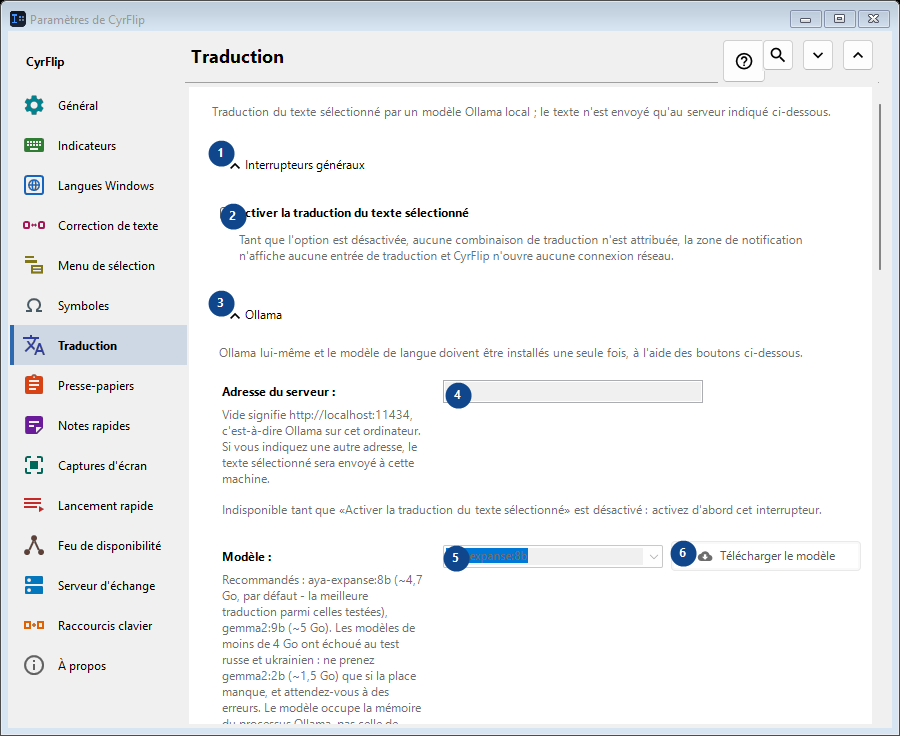
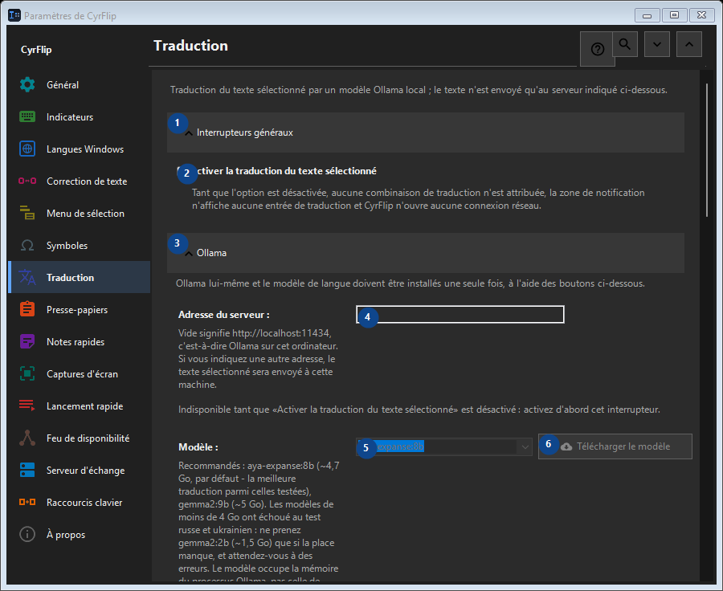

Traduction
À quoi cela sert
Traduction du texte sélectionné par un modèle Ollama local ; le texte n'est envoyé qu'au serveur indiqué ci-dessous.


Ordre des actions
Les réglages s’appliquent immédiatement. Aucun ordre n’est imposé ; utilisez les groupes ci-dessous.
Éléments
1. Interrupteurs généraux
Utilisez cette commande pour l’action indiquée. Lisez toute confirmation avant de l’accepter.
Vos raccourcis2. Activer la traduction du texte sélectionné
Tant que l'option est désactivée, aucune combinaison de traduction n'est attribuée, la zone de notification n'affiche aucune entrée de traduction et CyrFlip n'ouvre aucune connexion réseau.
Vos raccourcis3. Ollama
Utilisez cette commande pour l’action indiquée. Lisez toute confirmation avant de l’accepter.
Vos raccourcis4. Adresse du serveur
Indisponible tant que «Activer la traduction du texte sélectionné» est désactivé : activez d'abord cet interrupteur. Cet élément est indisponible. Activez d’abord sa fonction ou sélectionnez une entrée.
Vos raccourcis5. Modèle
Indisponible tant que «Activer la traduction du texte sélectionné» est désactivé : activez d'abord cet interrupteur. Cet élément est indisponible. Activez d’abord sa fonction ou sélectionnez une entrée.
Vos raccourcis6. Télécharger le modèle - Modèle
Indisponible tant que «Activer la traduction du texte sélectionné» est désactivé : activez d'abord cet interrupteur. Cet élément est indisponible. Activez d’abord sa fonction ou sélectionnez une entrée.
Vos raccourcis7. Installer Ollama
Indisponible tant que «Activer la traduction du texte sélectionné» est désactivé : activez d'abord cet interrupteur. Cet élément est indisponible. Activez d’abord sa fonction ou sélectionnez une entrée.
Vos raccourcis8. Démarrer Ollama
Indisponible tant que «Activer la traduction du texte sélectionné» est désactivé : activez d'abord cet interrupteur. Cet élément est indisponible. Activez d’abord sa fonction ou sélectionnez une entrée.
Vos raccourcis9. Tester la connexion
Indisponible tant que «Activer la traduction du texte sélectionné» est désactivé : activez d'abord cet interrupteur. Cet élément est indisponible. Activez d’abord sa fonction ou sélectionnez une entrée.
Vos raccourcis10. Annuler
Utilisez cette commande pour l’action indiquée. Lisez toute confirmation avant de l’accepter. Cet élément est indisponible. Activez d’abord sa fonction ou sélectionnez une entrée.
Vos raccourcis11. Démarrer Ollama automatiquement lors d'une traduction
Indisponible tant que «Activer la traduction du texte sélectionné» est désactivé : activez d'abord cet interrupteur. Cet élément est indisponible. Activez d’abord sa fonction ou sélectionnez une entrée.
Vos raccourcis12. Garder le modèle en mémoire (min)
Indisponible tant que «Activer la traduction du texte sélectionné» est désactivé : activez d'abord cet interrupteur. Cet élément est indisponible. Activez d’abord sa fonction ou sélectionnez une entrée.
Vos raccourcis13. Ollama lui-même et le modèle de langue doivent être installés une seule fois, à l'aide des boutons ci-dessous.
Choisissez ou saisissez la valeur indiquée par le libellé voisin. Vérifiez-la avant de continuer. Cet élément est indisponible. Activez d’abord sa fonction ou sélectionnez une entrée.
Vos raccourcis14. Attendre le chargement du modèle au plus (s)
Indisponible tant que «Activer la traduction du texte sélectionné» est désactivé : activez d'abord cet interrupteur. Cet élément est indisponible. Activez d’abord sa fonction ou sélectionnez une entrée.
Vos raccourcis15. Ollama lui-même et le modèle de langue doivent être installés une seule fois, à l'aide des boutons ci-dessous.
Choisissez ou saisissez la valeur indiquée par le libellé voisin. Vérifiez-la avant de continuer. Cet élément est indisponible. Activez d’abord sa fonction ou sélectionnez une entrée.
Vos raccourcis16. Sens de traduction
Utilisez cette commande pour l’action indiquée. Lisez toute confirmation avant de l’accepter.
Vos raccourcis17. Ajouter un sens de traduction...
Indisponible tant que «Activer la traduction du texte sélectionné» est désactivé : activez d'abord cet interrupteur. Cet élément est indisponible. Activez d’abord sa fonction ou sélectionnez une entrée.
Vos raccourcis18. Résultat
Utilisez cette commande pour l’action indiquée. Lisez toute confirmation avant de l’accepter.
Vos raccourcis19. Placer la traduction dans le presse-papiers
Indisponible tant que «Activer la traduction du texte sélectionné» est désactivé : activez d'abord cet interrupteur. Cet élément est indisponible. Activez d’abord sa fonction ou sélectionnez une entrée.
Vos raccourcis20. Coller aussitôt la traduction à la place de la sélection
Indisponible tant que «Activer la traduction du texte sélectionné» est désactivé : activez d'abord cet interrupteur. Cet élément est indisponible. Activez d’abord sa fonction ou sélectionnez une entrée.
Vos raccourcis21. Afficher le texte source à côté de la traduction
Indisponible tant que «Activer la traduction du texte sélectionné» est désactivé : activez d'abord cet interrupteur. Cet élément est indisponible. Activez d’abord sa fonction ou sélectionnez une entrée.
Vos raccourcis22. Fermer la fenêtre au bout de (s)
Indisponible tant que «Activer la traduction du texte sélectionné» est désactivé : activez d'abord cet interrupteur. Cet élément est indisponible. Activez d’abord sa fonction ou sélectionnez une entrée.
Vos raccourcis23. Indisponible tant que «Activer la traduction du texte sélectionné» est désactivé : activez d'abord cet interrupteur.
Choisissez ou saisissez la valeur indiquée par le libellé voisin. Vérifiez-la avant de continuer. Cet élément est indisponible. Activez d’abord sa fonction ou sélectionnez une entrée.
Vos raccourcis